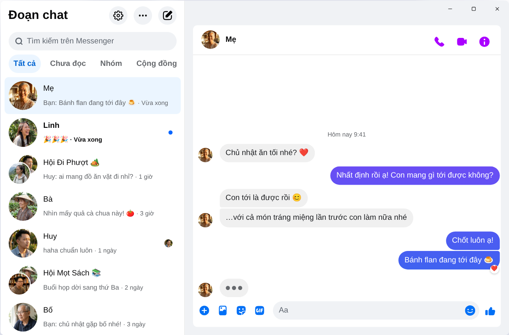

Chatpane / Windows
Cập nhật tháng 11/2026
Cách dùng Messenger trên máy tính năm 2026
Meta đã ngừng ứng dụng Messenger cho Windows từ ngày 15/12/2025, và messenger.com giờ chuyển bạn sang Facebook. Đây là những cách còn dùng được trên máy tính, laptop chạy Windows 10 hoặc 11.
Miễn phí, mã nguồn mở · Windows 10 và 11 · Không phải ứng dụng của Meta
Trả lời nhanh
Không còn ứng dụng Messenger chính thức cho máy tính nữa. Meta đã gỡ ứng dụng khỏi Microsoft Store, và từ tháng 4/2026 Messenger trên máy tính chỉ còn chạy ở facebook.com/messages, bên trong Facebook.
Nếu bạn muốn Messenger có cửa sổ riêng, không lẫn bảng tin hay Reels, Chatpane là ứng dụng miễn phí, mã nguồn mở cho Windows chỉ mở các đoạn chat của bạn. Đây là dự án độc lập, không phải của Meta.
Vì sao nhiều bài hướng dẫn cũ không còn đúng
Nhiều bài hướng dẫn vẫn bảo bạn vào Microsoft Store tìm "Messenger", hoặc tải file cài đặt Messenger 2250.1 từ các trang tải phần mềm. Cách đó không còn tác dụng: đó chính là ứng dụng Meta đã khai tử tháng 12/2025, mở lên chỉ chuyển bạn sang Facebook.
Cũng đừng nhập mật khẩu Facebook vào phần mềm hay trang web không rõ nguồn gốc. Nếu ai đó mời bạn tải "Messenger cho PC" có màn hình đăng nhập riêng, hãy cảnh giác.
Chuyện gì đã xảy ra với Messenger cho Windows?
Năm 2024, Meta thay ứng dụng Windows bằng một bản web đóng gói. Tháng 10/2025, Meta thông báo khai tử và gỡ ứng dụng khỏi Microsoft Store, rồi từ 15/12/2025 ứng dụng ngừng hoạt động. Tháng 4/2026, messenger.com cũng đóng lại. Chi tiết và mốc thời gian có trong bài Messenger trên máy tính bị khai tử.
Các lựa chọn
Những cách dùng Messenger trên Windows
Chatpane trên Windows
Chatpane mở đúng Messenger mà bạn vẫn thấy trên trình duyệt, nên mọi đoạn chat, nhóm, cuộc gọi và ảnh đều còn nguyên và đồng bộ với điện thoại. Thứ duy nhất bị bỏ đi là phần còn lại của Facebook.
- Chỉ có Messenger. Bảng tin, Reels, Marketplace và ô tìm kiếm của Facebook đều được ẩn đi.
- Thông báo dùng được ngay. Trả lời, thả cảm xúc, đánh dấu đã đọc hoặc tắt thông báo đoạn chat ngay trên thông báo, không cần mở cửa sổ. Tiện khi bạn vừa làm việc vừa nhắn tin, bên cạnh Zalo.
- Thanh tác vụ và khay hệ thống. Số tin chưa đọc trên biểu tượng, tự mở cùng Windows, và vẫn chạy ở khay hệ thống khi đóng cửa sổ.
- Riêng tư. Ẩn trạng thái đang soạn tin, ẩn tên và ảnh đại diện khi chia sẻ màn hình, và chặn các yêu cầu thu thập dữ liệu phân tích của Facebook (bật sẵn).
- Tiếng Việt. Chatpane theo ngôn ngữ của máy tính, nên menu và cài đặt hiện bằng tiếng Việt.

Cách cài đặt
- Tải bộ cài cho Windows. Nếu máy bạn dùng chip ARM, hãy tải bộ cài ARM64.
- Mở file vừa tải. Bộ cài Chatpane cho Windows chưa có chữ ký số, nên SmartScreen có thể hiện "Windows đã bảo vệ PC của bạn". Bấm "Thêm thông tin" rồi "Vẫn chạy". Chỉ tải Chatpane từ chatpane.app hoặc GitHub.
- Đăng nhập bằng tài khoản Facebook bạn vẫn dùng. Các đoạn chat hiện ra ngay.
Không muốn cài đặt? Bản portable (.zip) chạy được mà không cần cài.
Hỏi đáp
Câu hỏi về Messenger trên máy tính
Chatpane có miễn phí không?
Có. Không mất phí, không gói thuê bao, không quảng cáo. Chatpane là phần mềm mã nguồn mở theo giấy phép MIT, mã nguồn được công khai trên GitHub cho bất kỳ ai kiểm tra.
Đây có phải ứng dụng Messenger chính thức không?
Không. Chatpane là dự án độc lập, không liên quan đến Meta. Ứng dụng hiển thị Messenger thật ở facebook.com/messages trong một cửa sổ riêng, nên tin nhắn của bạn vẫn đi qua Messenger và các điều khoản của Meta vẫn áp dụng.
Không có tài khoản Facebook thì có dùng được không?
Không. Từ tháng 4/2026, Meta chỉ cho dùng Messenger không cần tài khoản Facebook trên ứng dụng điện thoại. Trên máy tính, Chatpane và mọi cách khác đều cần tài khoản đăng nhập được facebook.com.
Có chạy trên Windows 10 không?
Có, trên cả Windows 10 và 11. Chatpane dùng Microsoft Edge WebView2, có sẵn trong Windows 11. Trên Windows 10, bộ cài sẽ tự tải WebView2 nếu máy chưa có.
Có gọi video được không?
Có. Đây là Messenger đầy đủ, nên gọi thoại và gọi video mở trong cửa sổ riêng, giống như trên facebook.com.
Tải Chatpane về
Miễn phí và mã nguồn mở. Tải xong trong vài giây - chỉ khoảng 4 MB.
Mac Intel đời cũ? Intel .dmg
Danh sách đầy đủ kèm mã checksum nằm trên
GitHub
- hoặc brew install --cask kristofferR/tap/chatpane